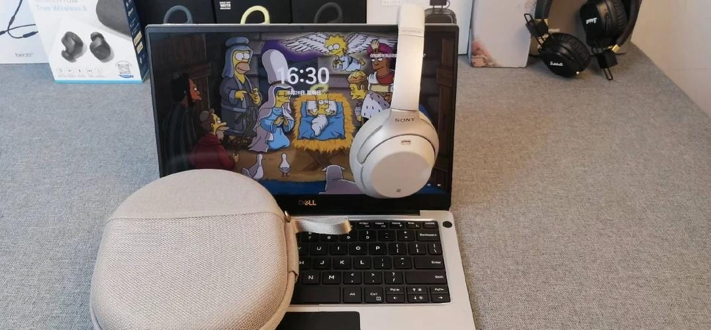

索尼 WH-1000XM3

QN1 降噪加持的旗舰头戴，可折叠长续航
客观评测
WH-1000XM3 采用 40mm 液晶高分子振膜动圈单元，搭载 HD QN1 降噪处理器，蓝牙 4.2，支持 LDAC、aptX HD 与 AAC。降噪较前代大幅提升，实测对中低频环境噪声的消除达到行业顶级水准，并配有气压降噪优化与自适应声音控制。续航约 30 小时（降噪开启），USB-C 充电 10 分钟可用 5 小时，重 255g，可折叠。LDAC 下频响 4Hz–40kHz，低频充沛、氛围感强，DSEE HX 升频对压缩音源有可闻改善。
主观点评
XM3 是我用过最有「掌控感」的降噪耳机：在耳罩上轻划即可调节音量，长按唤醒语音助手，捂住耳罩立刻切到环境音。255g 的重量比 QC35 更轻，折叠后塞进包里毫无负担，30 小时续航基本告别电量焦虑。听感热情抓耳，低频下潜深、鼓点有力，适合流行与电子；听古典时人声略偏厚。在 2018 年它几乎凭一己之力把降噪耳机推成了大众标配。
优点与不足
- QN1 降噪能力行业顶级，低频噪声消除出色
- 30 小时续航加快充，出差一周几乎不用充电
- LDAC 高清传输，声音饱满氛围感强
- 触控面板低温环境下偶有失灵
- 通话麦克风一般，风噪场景表现欠佳
- 耳罩皮革长期使用易脱皮
参数规格
| 类型 | 封闭式头戴动圈 |
|---|---|
| 单元 | 40mm 液晶高分子振膜动圈 |
| 蓝牙 | 蓝牙 4.2（LDAC / aptX HD / AAC） |
| 降噪 | HD QN1 降噪处理器 |
| 续航 | 约 30 小时（降噪开启） |
| 充电 | USB-C，充电 10 分钟可用 5 小时 |
| 重量 | 约 255g |
| 接口 | 3.5mm 有线 |
| 频响 | 4Hz–40kHz（LDAC 播放） |
| 操控 | 耳罩触控面板 + 自适应声音控制 |